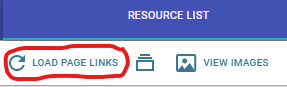
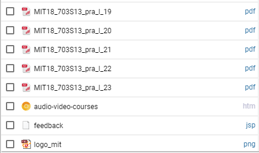
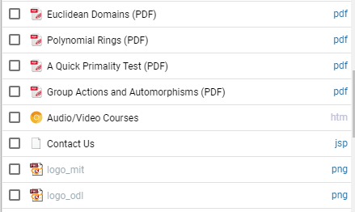
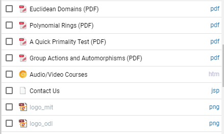
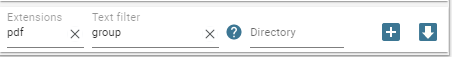
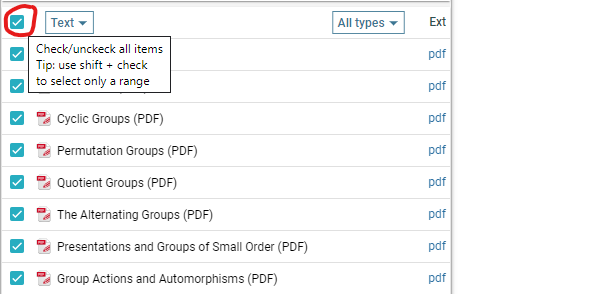
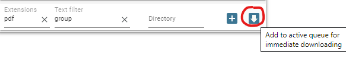
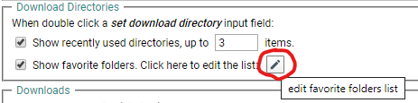
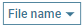

Otherwise, for every item in the download queue you will be prompted to choose a name via a Save As dialog (try to figure out what that means for a list of, say, 500 downloads or more)!
Basic usage
The user go to some web page, right click and from the contextual menu choose the  . This will show a quick download dialog:
. This will show a quick download dialog:

The files start to download and if all goes well the user will found them in the Downloads/Algebra subfolder.
Tip: If the user make a text selection on the web page, the addon will try to include only the links from that selection (the context menu will also include the option  )
)
This workflow lacks advanced filtering/renaming options but may be appropriate in many situations.
A more typical workflow
The general idea of the addon is to collect links to the resources list (with optional filtering) and finally to add checked items to the download queue.
-
Go to some web page (with many resources, for example pdfs, epubs etc), activate the extension popup and click there the Load page
links button:
This usually fills the resources list with all sort of links, not only the desired pdfs.Note that the addon display files, by default, using the (estimated) file names. But sometimes is better to display links using the text attribute (what the user usually see on web pages). So for a better orientation, you can choose the text as displayed attribute and now you see something as
 
 - Now, the next step is to filter this list, such that only desirable links stays here.
The most obvious type of filtering is by extension. You can start filtering process by writingpdfin the dedicated extensions field (orpdf epub docif you seek more types). If necessary, you can refine filtering using the textfilter fieldNote that the textfilter uses by default the attribute currently used for displaying items (by defaultFILENAME, but in our caseTEXT). A more advanced usage may involve more attributes, for example,text:group url:algebra(this shows only items withgroupterm inside text attribute andalgebraterm inside their url). Click the corresponding help button for more details regarding filtering possibilities (this help button is visible only the textfilter field is focused).
for more details regarding filtering possibilities (this help button is visible only the textfilter field is focused).
-
Now you have isolated all desired pdf. Next check all items at once (using the top main check) or only a range (using
shift + click) and finally click the download now button from bottom-right corner -
The items start downloading. A finished item looks like:
You can directly open the file clicking its name or open the directory where the file was downloaded using the corresponding folder icon.

Setting a custom download directory
By default, all downloaded files go to the Chrome global download directory  (usally named Downloads)
(usally named Downloads)
algebra/groups in the dedicated directory field. Now all downloaded files go specifically to the Downloads/Algebra/Groups subfolder.
Some tips:
- You can first define a set of favorite folders. For this, go to the addon settings ,
on Download directories section: - You can use some name masks on directory names. For example
Algebra {yyyy}/Groupswill generate the subfolders pathDownloads/Algebra 2019/Groups. Click the corresponding help button for more details.
Batch renaming
In many cases, the user can accept the default filenames, leaving unchanged the  as displayed
name for the resources list and clicking  for immediate downloading (after checking desired items).
for immediate downloading (after checking desired items).
But, sometimes, it's better to do some batch renaming before downloading and in this case the user will click on the other button
 . This will simply add the checked items to the (passive) download list:
. This will simply add the checked items to the (passive) download list:

FILENAME).Now, the user can try to rename these files, using the name masks from the multirename dialog:
 for more details (this help button is visible only when the name masks field is focused).
for more details (this help button is visible only when the name masks field is focused).